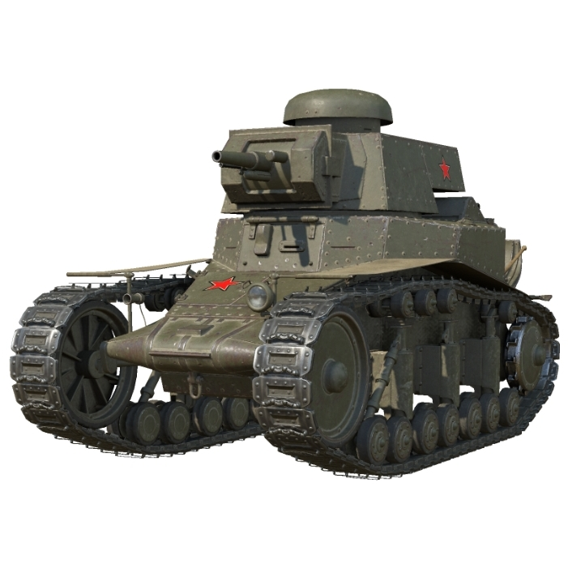
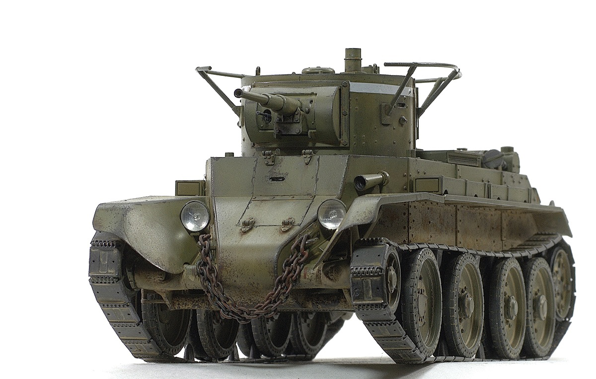
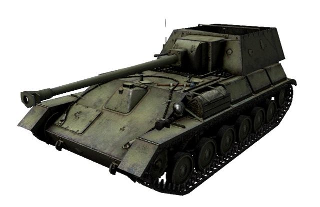
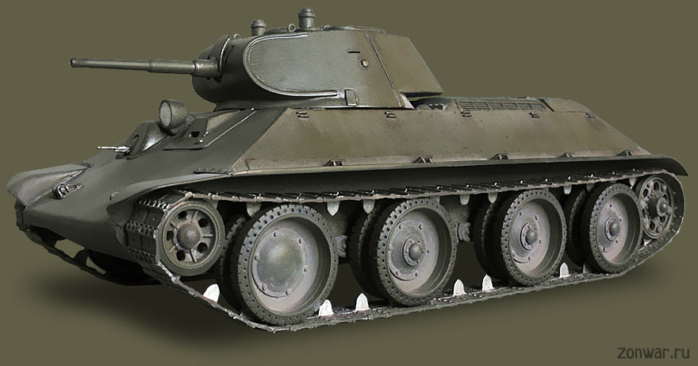
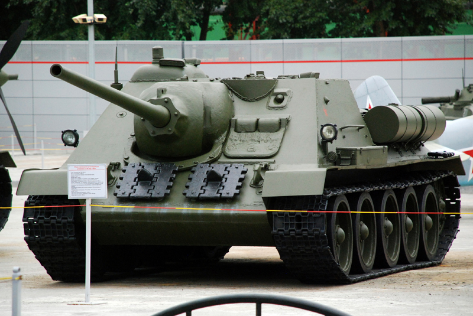
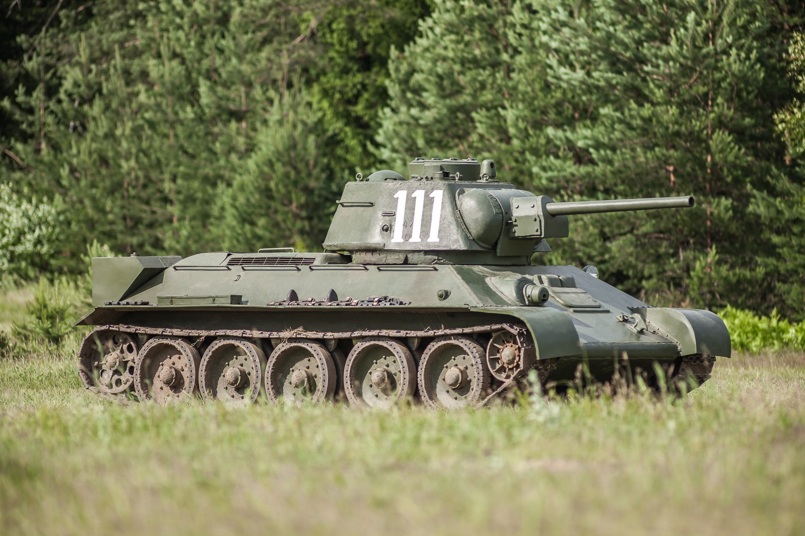
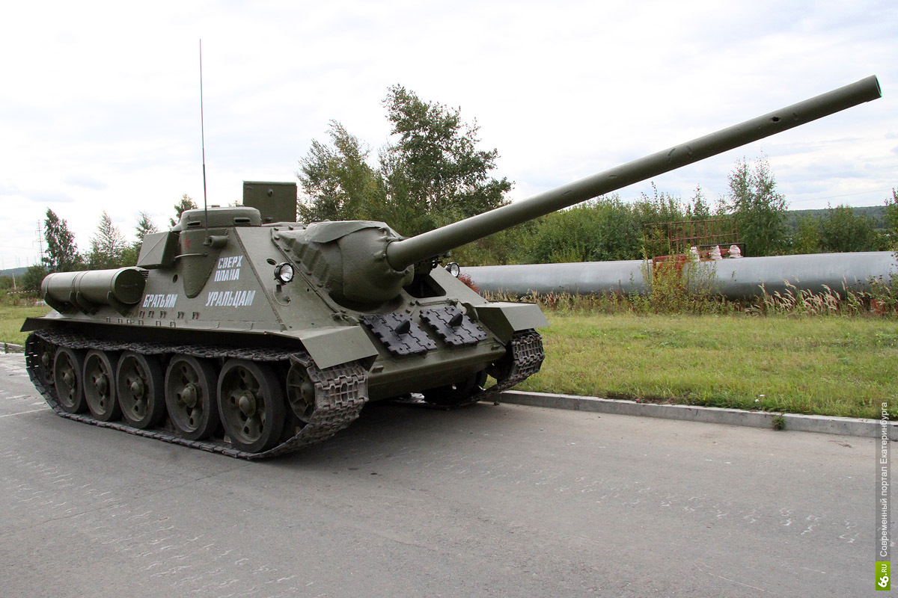

добро пожаловать на сайт википедия танков
тут вы сможите найти истории про разные танки
ссылки на национальность танков
Советские танки
Mc-1

Советский лёгкий танк непосредственной поддер
жки пехоты 1920-х годов. Создан в 1925-1927 годах. Стал первым танком
советской разработки. Серийно производился
с 1928 по 1931 год, всего в нескольких вариантах было выпущено 959 танков
этого типа, не считая прототипа. В конце 1920-х - начале 1930-х годов
Т-18 составлял основу танкового парка РККА, но довольно быстро
был вытеснен более совершенным Т-26. Применялся в бою в конфликте
на КВЖД, но в 1938-1939 годах устаревшие и достигшие
крайней степени износа Т-18 были в основном сняты с вооружения или
использовались как неподвижные огневые точки. В незначительной
количестве использовались на начальном этапе Великой Отечественной войны.
Бт-7

Советский колёсно-гусеничный танк периода 1930-1940-х годов. Третий танк
семейства советских лёгких танков БТ. В отличие от своих предшественников БТ-2 и БТ-5,
имел сварной корпус несколько изменённой формы и новый двигатель. Вооружение
аналогично БТ-5. Выпускался, как и БТ-5, в варианте с радиостанцией и без
радиостанции. Всего произведено 5763 машины
Су-85Б

Советская противотанковая самоходная артиллерийская установка на шасси Т-70,
которой пытались заменить СУ-76.
А-20

А-20 — советский опытный лёгкий танк. Создавался в 1939 году как
улучшенная и более бронированная версия танка БТ-7. К 1940 году был
выпущен один опытный образец танка, но до производства дело не дошло,
так как от него отказались в пользу Т-34. 13 октября 1937 года АБТУ
выдало заводу № 183 техническое задание на проектирование новой
боевой машины — колёсно-гусеничного танка БТ-20:
Су-85

Средняя по массе советская САУ, относящаяся к классу
истребителей танков. СУ-85 активно и успешно использовались
с сентября 1943 года до окончания Великой Отечественной войны.
Т-34

T-34 («три́дцатьчетвёрка») — советский средний танк периода
Великой Отечественной войны, выпускался серийно с 1940 года,
и с 1944 года стал основным средним танком Красной Армии СССР.
Разработан в Харькове. Самый массовый средний танк Второй
мировой войны. С 1942 по 1945 гг. основное, крупносерийное
производство Т-34 было развёрнуто на мощных машиностроительных
заводах Урала и Сибири, и продолжалось в послевоенные годы.
Ведущим заводом по модифицированию Т-34 являлся Уральский
танковый завод № 183. Последняя модификация (Т-34-85)
состоит на вооружении некоторых стран и по сей день.
Благодаря своим боевым качествам Т-34 был признан рядом специалистов
лучшим средним танком Второй мировой войны и оказал громадное влияние
на дальнейшее развитие мирового танкостроения. При его создании советским
конструкторам удалось найти оптимальное соотношение между основными боевыми,
эксплуатационными и технологическими характеристиками.
Танк Т-34 является самым известным советским танком
Второй Мировой войны, а также одним из самых узнаваемых ее
символов. До настоящего времени сохранилось большое
количество этих танков различных модификаций в виде
памятников и музейных экспонатов.
КВ-1

Советский тяжёлый танк времён Великой Отечественной войны.
Обычно называется просто «КВ»: танк создавался под этим
именем, и лишь позже, после появления танка КВ-2, КВ первого образца
ретроспективно получил цифровой индекс. Выпускался с августа 1939 года по август 1942 года.
Су-100

Советская противотанковая самоходная артиллерийская установка периода Второй Мировой войны,
класса истребителей танков, средняя по массе. Была создана на базе среднего танка Т-34-85
конструкторским бюро Уралмашзавода в конце 1943 - начале 1944 года
как дальнейшее развитие САУ СУ-85 ввиду недостаточных возможностей последней
в борьбе с немецкими тяжёлыми танками. Серийный выпуск СУ-100 был начат
на Уралмашзаводе в августе 1944 года и продолжался до начала 1948 года.
Кроме того, в 1953-1956 годах её производство под обозначением SD-100 по
советской лицензии осуществлялось в Чехословакии. Всего там собрали 770 установок.
Всего же в СССР и Чехословакии было выпущено 4011 САУ этого типа.
Т-34-85

Войсковое обозначение последней модификации советского среднего
танка Т-34 с орудием калибра 85-мм. Принят на вооружение РККА Постановлением ГКО № 5021 от 23 января 1944 года.